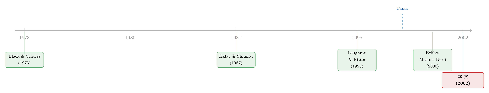

增发之后，股票在跌，债券却在悄悄上涨
本文读的是 Eberhart & Siddique (2002, Review of Financial Studies)：公司增发新股（SEO）之后，股票在五年里持续跑输，这早有人记录；但他们第一次把同一批公司的债券也拉出来看，发现债券在同样的五年里出现了正的、延迟的超额回报。一个不依赖任何「预期股票收益模型」的现象，把「坏模型问题」这块挡箭牌击穿了——市场确实没那么有效。而且，股东亏掉的钱里，有一部分是转移给了债权人。
1 一桩悬案：增发之后，股票为什么跌个不停
先从一个被反复记录、却始终没能定案的现象说起。
公司做季节性增发 (seasoned equity offering, SEO) ——也就是已经上市的公司再发一批新股——之后，它的股票往往会在接下来五年里持续跑输大盘。Loughran 和 Ritter (1995) 把这件事叫做「新股之谜」(the new issues puzzle)，Spiess 和 Affleck-Graves (1995)、Jung、Kim 和 Stulz (1996) 也都给出了类似的证据。如果你相信这些研究里用的「预期股票收益模型」是对的，那么这种延迟的、慢吞吞的下跌，就是对有效市场假说 (efficient market hypothesis, EMH) 的直接打脸：好消息也好、坏消息也罢，价格本该一步到位，怎么会拖上五年？
但故事没这么简单。Fama (1998) 站出来泼了一盆冷水。他的论点很锋利：所谓的「长期超额收益」，最脆弱的地方恰恰在于你怎么估「预期收益」。只要你的风险模型估错了——他把这叫做「坏模型问题」(the bad-model problem)——你就会把一堆其实只是风险补偿的正常收益，误读成「异常」。于是 Fama 给出结论：增发之后那点所谓的负超额收益，不是市场无效，而是风险被算错了。
接着，更新的两篇论文站到了 Fama 一边。Eckbo、Masulis 和 Norli (2000，下称 EMN) 和 Brav、Geczy 和 Gompers (2000，下称 BGG) 各自换了一套预期收益模型，结果增发之后的「超额收益」就变得不显著了。看上去，坏模型问题赢了。
可这恰恰把整场争论逼进了一条死胡同：所有人都在吵「该用哪个模型估预期股票收益」。BGG 自己也承认，他们的模型和 EMN 的模型还需要进一步比对；Loughran 和 Ritter (2000) 更狠，干脆说很多预期收益模型——包括 BGG、乃至 EMN——「根本没有能力去检验 EMH」。换句话说，只要尺子本身有争议，量出来的结论就永远定不了案。
这正是长期事件研究的通病：你看到的「异常」，到底是市场犯的错，还是你手里那把尺子歪了？关于「上市/发行后跌跌不休」未必是市场无效、而可能是一道内生性算术题，可参见《为什么「上市后跌跌不休」可能是一道算术题》；关于「换一把尺子，异常收益就消失一半」，也可参见《换一把尺子，一半的动量利润就消失了》。
2 真正关键的一步：去问债券
那么，一个自然的问题是——有没有办法绕开这把有争议的尺子？
这就是本文最漂亮的一招。Eberhart 和 Siddique 说：既然大家吵的是「预期股票收益怎么估」，那我们干脆不看股票，去看债券。
为什么这招管用？因为同一批增发公司，它们除了发股票，也发了在外流通的公司债。如果增发后那种延迟反应真的是市场无效造成的，那它没有理由只发生在股票上——债券价格应该也会出现类似的延迟调整。而债券超额收益的估计，几乎不依赖那些争得不可开交的股票收益模型。于是他们做了文献里第一个对「增发后公司债长期收益」的分析。
结果是：增发之后，这些公司的债券出现了一个长达五年的、正的、延迟的价格反应。
请注意这个发现的分量：它和股票市场里早就记录的那种「五年延迟」方向一致、时长一致，却完全不依赖任何一个特定的预期股票收益模型。坏模型问题的挡箭牌，在债券这一侧就举不起来了。
但你可能立刻会反驳：估债券收益不也得有个模型吗？没错，「坏模型问题」对债券同样存在，只是争议小得多。于是作者又补了一记更狠的、几乎不需要任何模型的检验。
3 一个连模型都不用的检验：股票真的比债券「更野」吗？
这一步是全文的题眼，也是最像「常识反转」的地方。
金融学最朴素的一条假设是：同一家公司，股票比债券更有风险——股东排在债权人后面受偿，承担的是剩余风险。既然股票更有风险，那么在足够长的样本里，它的原始收益（raw return，不做任何风险调整）就该高于债券。这是一个不依赖任何预期收益模型的 EMH 推论。
于是作者直接比：在 18 年的样本期里，这些增发公司的原始股票收益有没有显著高于它们的原始债券收益？
答案是——没有。不但没有，反而通常是债券的原始收益高于股票。
而这并不是因为赶上了一个「债券碰巧跑赢股票」的怪年头。作为对照，作者拿整体市场来比：同一时期，整个股票市场的收益显著高于整个债券市场，对那些没有增发的公司也是如此。也就是说，「股优于债」在大盘上成立得好好的，唯独在这批增发公司身上反了过来。
这是一个很难用「坏模型」搪塞过去的证据。它比较的是同一家公司的股票和债券的原始收益，没有用任何风险调整、没有任何预期收益模型。结论却直接和 EMH 拧着来：本该更野的股票，反而跑输了本该更稳的债券。
到这里，作者还不放心，又正面迎上坏模型问题：他们干脆用 BGG 和 EMN 自己的那套模型，去算这批增发公司的超额股票收益。虽然样本期不同（受限于债券数据，他们的样本是 1980–1992），不可能完美复制人家的结果，但 18 年、跨多个经济周期，如果 EMH 成立、且 EMN/BGG 的「不显著」不是他们样本独有的，那本文也该得到不显著的结果。
结果呢？仍然是显著为负的长期超额股票收益。 哪怕用上最新提出的预期收益模型，也没能把这批公司的负超额收益「抹平」到不显著。而且这个结论在文献推荐的各种方法下都稳健：事件时间 (event-time) 的买入持有收益、日历时间 (calendar-time) 的组合收益、等权、市值加权——换着花样算，结论不变。
4 于是反转出现：股东亏的钱，去哪儿了？
把前面几块拼起来，一个更深的问题浮出水面：股票在跌、债券在涨——这两件事是不是同一件事的两面？
是的。这就是「财富转移」(wealth transfer) 假说。
它的逻辑要回到 Black 和 Scholes (1973) 那个经典的期权视角。把公司的股权看成一份写在公司资产上的看涨期权，那么债权人手里的债，就等于「无风险债」减去一份他们隐性卖给股东的看跌期权 (put option)：一旦公司价值跌破债务面值，股东就「行权」把公司甩给债权人——这就是违约。
现在，增发干了什么？在其他条件不变下，增发新股会降低公司的负债率，从而降低违约风险。违约风险一降，债权人当初卖出的那份看跌期权就贬值了——对债权人来说这是好事（他们少卖了一份「保险」），对股东来说则是坏事（他们手里那份「赖账权」缩水了）。于是财富从股东转移给了债权人。
这套逻辑，本文用数据扎扎实实地坐实了。增发之后：
- 样本公司的平均负债率（年初口径）是
42.83%，而增发后五年里平均下降了 3.20 个百分点——这个降幅在统计上显著； - 伴随着负债率下降的，是评级上升：平均而言，债券评级从
BBB−升到BBB。这一跳很关键——它意味着这批公司的「平均一只债」从垃圾级迈进了投资级； - 在那 73 个「用增发款去回购债务」的子样本里，评级跳得更猛——平均升了三个等级，从
BB−升到BBB−。
关于「股东说了算的公司治理变化，会如何通过这份隐性看跌期权重新分配股东与债权人之间的财富」，可参见《股东说了算，债主就要遭殃吗？——治理与债券价格》；关于把公司证券整体当成期权来给债与股同时定价的框架，可参见《公司随时都可能倒下，期权定价却只盯着还债那一天》。
5 纯转移，还是部分转移？把公司当成一个整体来算账
财富转移假说还分两个版本，而区分它们，需要把股票和债券合起来看。
- 纯财富转移 (pure wealth transfer)：债券赚的，恰好等于股票亏的。两者一加，公司层面的超额收益为零。也就是说，增发只是把饼重新切了一下，没把饼做小——股东的损失，全部是转移，而非毁灭。
- 部分财富转移 (partial wealth transfer)：债券的正超额只抵消了一部分股票的负超额，公司层面的超额收益仍然显著为负。这意味着不只是股票被高估，整个公司在增发时就被高估了——这与「管理层择时、趁公司（而不只是股票）被高估时增发」的窗口期假说相吻合。
要算这笔总账，就得有一个把股、债加权合起来的「公司超额收益」。本文用的是下面这个定义（论文式 (1)）：
这里 \(D\) 是公司全部计息负债的市值，\(S\) 是股权市值，\(V = S + D\) 是公司价值，权重 \(D/V\) 与 \(S/V\) 都按增发当年年初测量。直觉很简单：公司这个「整体」的超额收益，就是它两块资本——债与股——各自超额收益的市值加权平均。如果增发只是在 \(D\) 和 \(S\) 之间挪钱，那么 \(AR_V\) 应该被熨平到零（纯转移）；如果连 \(AR_V\) 都显著为负，那就说明饼本身缩水了（部分转移）。
本文的结论站在部分转移这一边：样本公司增发后的长期公司超额收益显著为负。更进一步，他们把每家公司的超额股票收益对其超额债券收益做了一个横截面回归，结果同样更支持部分转移。
换句话说：股东确实把一部分钱让渡给了债权人（所以单看股票，会高估公司被高估的程度）；但即便扣掉这部分转移，公司作为一个整体，在增发时仍然是被高估的。
6 数据与方法：一把更干净的债券尺子
这篇文章能成立，很大程度上靠的是它的数据选择，值得单独说一句。
样本。增发日期购自 Securities Data Corporation (SDC)，覆盖 1980 年 1 月到 1992 年 12 月的全部一级工业类增发，初始有 1368 笔增发、1083 家公司。但本文要看债券，所以必须同时满足：在 CRSP 有股票数据、在 Lehman Brothers Fixed Income Database 有债券数据、在 Compustat 有正的账面权益和债务账面值。层层筛下来，最终样本是 189 笔增发、140 家工业公司。
为什么是 Lehman 这套数据？因为它记录的是机构层面、场外交易的非可转换债券月度价格，比交易所挂牌的债券数据干净得多、也更有代表性（Warga 和 Welch 1993）。事实上，本文特意点名了之前唯一一篇研究增发前后债券收益的已发表论文——Kalay 和 Shimrat (1987)——指出它用的是交易所挂牌债券，数据质量问题众所周知，而且只看了短期公告效应、没看长期。本文正是用这套当年还不存在的机构数据，补上了这块空白。
代价是样本偏向大公司。要求有公开交易的债券，会把样本往大公司那边拽：本文样本公司的平均股权市值是 $2173 百万（中位数 $1023 百万，1997 年美元），而全部增发公司（含只有公开股票的）平均才 $509 百万（中位数 $127 百万）。大公司的负超额收益幅度通常更小：用 CRSP 市值加权指数做基准、事件时间口径，全样本 60 个月的平均超额股票收益是 −50.63%、中位数 −84.17%；本文子样本则是平均 −13.01%、中位数 −24.54%。
但换成美元损失，故事就反过来了：因为公司大，本文子样本股东在 60 个月里的平均美元损失高达 $525 百万（中位数 $94 百万），远超全样本的 $168 百万（中位数 $57 百万）。从「亏掉多少真金白银」的角度，本文这批大公司的超额损失反而更有看头。
估预期收益的几把尺子。债券侧，沿用 Warga 和 Welch (1993)：用一个同评级、久期相差不超过四年的债券组合作为基准。这里有个聪明的偏误论证——评级调整往往滞后于真实违约风险的下降，而本文样本公司的负债率在降、评级在升，所以如果有滞后，匹配组合反而比样本债券更有风险、预期收益更高，这只会压低算出来的超额债券收益。也就是说，评级滞后是在和本文的发现作对，可他们照样找到了显著为正的超额债券收益。为防多只债券的高相关性把标准误压低，他们对每家公司用市值加权合成「一只债」；日历时间口径则用 Elton、Gruber 和 Blake (1995) 的六因子债券模型。股票侧，事件时间用 Lee (1997) 的匹配股票法，并用 Lyon、Barber 和 Tsai (1999) 的单匹配股票法、自助法偏度调整 t 值做稳健性；日历时间用 Fama-French、EMN、BGG 模型。
还有一处对偏度的处理值得一提：原始股票收益分布右偏严重（60 个月口径偏度高达 3.23），而原始债券收益几乎无偏（−0.05）。文献常在分布偏斜时更看重中位数，所以本文以中位数的原始收益差为主（均值结果也一致）。他们还剔除异常值直到两者偏度最接近，得到一个 154 笔增发的「偏度调整样本」（此时债券偏度 −0.30、股票偏度 −0.23），结论不变。
7 文献脉络
把这条线索捋一捋，会看到一个很清晰的「正—反—合」。
起点是一个期权直觉和一个谜。 Black 和 Scholes (1973) 给了我们看待公司证券的期权视角——债权人手里握着一份隐性卖出的看跌期权，这是后来「财富转移」整套逻辑的源头。而在实证一侧，Loughran 和 Ritter (1995)「新股之谜」、Spiess 和 Affleck-Graves (1995) 等一连串研究，记录了增发后股票长达五年的跑输，把矛头指向了市场无效。
接着是反方的反击。 Fama (1998) 用「坏模型问题」釜底抽薪：长期超额收益太容易被错估的预期收益污染。EMN (2000)、BGG (2000) 紧随其后，用各自的模型把增发后的「异常」抹成了不显著。Loughran 和 Ritter (2000) 则反过来质疑这些模型「没有检验 EMH 的能力」。整场争论卡死在「该用哪把尺子」上。

而本文（2002）做的是「换战场」。 既然在股票市场里，正反双方注定要为预期收益模型争执不下，那就把战场挪到债券——一个之前只有 Kalay 和 Shimrat (1987) 用劣质交易所数据、且只看短期的角落。借助 Warga 和 Welch (1993) 引入学界的 Lehman 机构债券数据，本文第一次系统地度量了增发后的长期债券收益，并用「股票原始收益该高于债券原始收益」这个不依赖模型的 EMH 推论，给整场争论提供了一个新的、更难反驳的证据。它既没有完全否定坏模型问题，也没有假装自己彻底终结了争论，而是把天平往「市场确实无效」那一侧，结结实实地压了一下。
8 评论与延伸（Q&A + 研究方向）
(a) 几个可能的疑问
Q：用债券绕开坏模型问题，可债券不也要估预期收益吗？这不还是换汤不换药？
部分是，但程度大不一样。作者坦承债券侧的坏模型问题依然存在，只是争议小得多——估预期债券收益主要靠评级和久期匹配，比估预期股票收益（要在因子模型动物园里选边站）干净得多。而且他们还加了一道几乎不用模型的检验：直接比同一公司的原始股票收益与原始债券收益。这一步才是真正难以用「模型错了」来搪塞的。
Q：样本只有 189 笔、140 家公司，而且明显偏大公司，结论还能推广吗？
这是最该警惕的地方。要求公司有公开交易的债券，天然把样本拽向大公司、投资级、上市成熟的企业。好处是这些公司的负超额收益幅度更小（更保守），坏处是结论未必能外推到那些真正「小而险」的增发主力。作者用美元损失（子样本平均
$525百万）来论证经济重要性，但样本选择偏误本身没法完全消除。
Q：债券正超额、股票负超额，会不会只是 1980–1992 这段时间债券碰巧走牛？
作者专门堵了这个口子。整体股票市场在同期显著跑赢整体债券市场，对非增发公司也如此——「股优于债」在大盘上成立得好好的，唯独在这批增发公司身上反转。所以这不是一个「债券普涨」的时间窗造成的假象。
Q：「财富转移」和「公司被高估」是不是互相矛盾的两套解释？
不矛盾，反而是叠加的。财富转移解释了为什么单看股票会夸大公司被高估的程度（股东的一部分损失只是转移给了债权人，不是凭空蒸发）。但本文发现公司层面的超额收益仍然显著为负，说明在转移之外，整个公司在增发时确实被高估了——这正是「部分转移」而非「纯转移」。
Q：评级上升会不会本身就是滞后的、被数据噪声驱动的？这会不会反而制造出虚假的正超额债券收益？
作者的偏误论证恰好相反。评级滞后意味着匹配的基准债券组合比样本债券更有风险（因为样本公司真实评级其实更高），从而基准预期收益偏高，这会压低算出来的超额债券收益。也就是说，评级滞后是在和「找到正超额」作对，结果他们还是找到了，这让发现更稳。
Q：增发后债券价格上涨，会不会只是因为公司用增发款直接回购了债务（需求冲击），而非违约风险下降？
两者都在起作用，而且不容易完全分开。那 73 个「用增发款回购债务」的子样本评级跳了三级，确实和主动减债有关；但即便不回购、只是降低杠杆，违约风险下降本身就足以抬升债券价值。本文的机制是「降杠杆→降违约风险→看跌期权贬值」，回购只是其中一条更激进的实现路径。
(b) 几个可能的研究问题与提案
1. 用现代公司债微观数据重做「股票原始收益 vs 债券原始收益」检验。 【经济故事】本文受限于 Lehman 月度机构数据，样本小、偏大公司。今天有 TRACE 逐笔成交数据，可以把增发后的债券收益度量得精细得多，并把样本扩展到高收益、中小发行人——这恰恰是新股之谜最强的地方。如果在更脏、更小的公司里，「债券原始收益≥股票原始收益」依然成立，本文结论的外部效度会大大增强。 【可行性】高。TRACE + Mergent FISD + SDC 增发数据 + CRSP/Compustat 都现成，识别策略可直接沿用本文的原始收益比较，无需新模型。难点是 TRACE 早期流动性差、价格噪声大，需要谨慎清洗。
2. 把财富转移的大小，和债券契约条款（covenants）对上。 【经济故事】财富转移的幅度应该取决于债权人「隐性看跌期权」的厚度，而这又取决于契约保护的强弱：有强保护性条款（限制再融资、维持净值）的债，违约风险本就被压住，增发带来的边际转移就该更小。反过来，松条款的债，转移应更大。 【可行性】中。需要把 FISD 的条款数据和发行人增发事件匹配，识别用横截面回归（转移幅度对条款强度）。挑战在于条款是内生选择的——发行时就预期到了未来的资本结构变动，需要工具变量或在事件前后做差分。
3. 外资持有人结构会不会改变财富转移的分配？ 【经济故事】如果一家公司的债券更多被对违约风险敏感、且监控能力强的机构（含外资）持有，增发降杠杆带来的「安全感」可能被这些持有人更快地定价进去，延迟反应会更短。这能把本文的「五年延迟」和持有人构成联系起来，检验延迟到底是信息摩擦还是投资者构成造成的。 【可行性】中偏低。需要债券层面的持有人数据（如保险公司 NAIC 持仓、共同基金持仓 N-PORT），外资持有的颗粒度尤其难拿。识别上可用持有人集中度/类型做横截面解释延迟速度，但因果识别较弱。
4. 反向事件：杠杆上升时（如举债回购、杠杆收购），债券是否出现对称的负延迟反应？ 【经济故事】如果增发（降杠杆）带来正的延迟债券反应，那么对称地，提高杠杆的事件应带来负的延迟债券反应和正的股票反应——这能检验「延迟反应+财富转移」是不是一个普遍机制，而非增发独有。 【可行性】高。杠杆收购、举债回购、特别股利事件都有清晰的事件日，TRACE 可度量债券长期收益，识别策略与本文镜像对称。这类反向检验是验证机制最干净的方式之一。
9 我的判断
这篇文章的贡献，不在于发明了什么新方法，而在于一个视角的转换：当所有人都在股票市场里为「该用哪个预期收益模型」争得面红耳赤时，它退一步，去问债券，并设计出一个几乎不用模型的检验（股票原始收益该高于债券原始收益）。这是把一场「方法论的口水仗」拉回到「可证伪的事实」上的漂亮一招。它同时还顺手把「财富转移」这条经常被口头提及、却很少被严格度量的机制，用评级跳升（BBB−→BBB，垃圾级到投资级）和公司层面的超额收益坐实了——而且诚实地停在「部分转移」，没有过度宣称。
对识别的担忧也很实在。最大的隐忧是样本选择：要求公开债券，使样本严重偏向大、稳、成熟的公司，恰恰避开了新股之谜最猛烈的小公司区域；189 笔的样本量也让横截面回归的统计功效打折。其次，债券的预期收益终究还是估出来的，作者的偏误论证（评级滞后压低超额收益）很巧妙，但它是一个方向性论证，没法量化残余偏误到底有多大。第三，「延迟五年」这件事本身的机制（是信息缓慢扩散，还是套利受限，还是投资者构成）在本文里并未被打开。
后续我最想看到的，是用 TRACE 时代的逐笔公司债数据，把这套检验在更大、更脏、更接近新股之谜核心的样本上重做一遍；以及把财富转移的幅度和债券契约条款、持有人结构对上号，看看那份「隐性看跌期权」到底厚在哪里、又是被谁、多快地重新定价的。如果这些都站得住，那本文在 2002 年压在天平上的那一下，就不只是一篇增发研究，而是一块关于「市场到底有多有效」的、用债券砌成的硬证据。
顺带一提，关于公司债里「风险到底有没有换来收益」，可参见《公司债里，风险终于换来了收益》；关于增发时机构投资者是「韭菜」还是「猎手」，可参见《增发那一刻，机构是「韭菜」还是「猎手」？》；关于增发折价里的信息成本，可参见《折价，是发行人替「最后一分钟」付的一笔信息费》。
参考文献
Black, F., and M. Scholes (1973). The Pricing of Options and Corporate Liabilities. Journal of Political Economy 81(3), 637–654.
Brav, A., C. Geczy, and P. A. Gompers (2000). Is the Abnormal Return Following Equity Issuances Anomalous? Journal of Financial Economics 56(2), 209–249.
Eberhart, A. C., and A. Siddique (2002). The Long-Term Performance of Corporate Bonds (and Stocks) Following Seasoned Equity Offerings. Review of Financial Studies 15(5), 1385–1406.
Eckbo, B. E., R. W. Masulis, and Ø. Norli (2000). Seasoned Public Offerings: Resolution of the 'New Issues Puzzle.' Journal of Financial Economics 56(2), 251–291.
Elton, E. J., M. J. Gruber, and C. R. Blake (1995). Fundamental Economic Variables, Expected Returns and Bond Return Performance. Journal of Finance 50(4), 1229–1256.
Fama, E. (1998). Market Efficiency, Long-Term Returns, and Behavioral Finance. Journal of Financial Economics 49(3), 283–306.
Jung, K., Y. Kim, and R. M. Stulz (1996). Timing, Investment Opportunities, Managerial Discretion, and the Security Issue Decision. Journal of Financial Economics 42(2), 159–185.
Kalay, A., and A. Shimrat (1987). Firm Value and Seasoned Equity Issues: Price Pressure, Wealth Redistribution, or Negative Information. Journal of Financial Economics 19(1), 109–126.
Lee, I. (1997). Do Firms Knowingly Sell Overvalued Equity? Journal of Finance 52(4), 1439–1466.
Loughran, T., and J. R. Ritter (1995). The New Issues Puzzle. Journal of Finance 50(1), 23–51.
Loughran, T., and J. R. Ritter (2000). Uniformly Least Powerful Tests of Market Efficiency. Journal of Financial Economics 55(3), 361–389.
Lyon, J. D., B. D. Barber, and C. Tsai (1999). Improved Methods for Tests of Long-Run Stock Abnormal Returns. Journal of Finance 54(1), 165–201.
Spiess, D. K., and J. Affleck-Graves (1995). Underperformance in Long-Run Stock Returns Following Seasoned Equity Offerings. Journal of Financial Economics 38(3), 243–267.
Warga, A., and I. Welch (1993). Bondholder Losses in Leveraged Buyouts. Review of Financial Studies 6(4), 959–982.